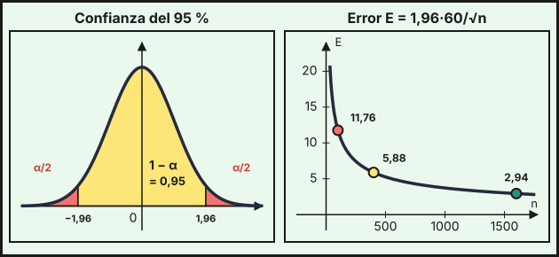

Muestreo e inferencia
1. Población, muestra y muestreo aleatorio simple
La estadística inferencial estudia una población (todos los individuos de interés) a partir de una muestra (una parte de ellos). Una característica de la población, como su media \(\mu\), su desviación típica \(\sigma\) o la proporción \(p\) de individuos con cierta propiedad, es un parámetro (desconocido). Su equivalente en la muestra, como la media muestral \(\overline{X}\) o la proporción muestral \(\hat p\), es un estadístico (se calcula con los datos).
En el muestreo aleatorio simple (MAS), todos los individuos tienen la misma probabilidad de entrar en la muestra y las elecciones son independientes. En poblaciones finitas se entiende que se elige con reemplazamiento. Para que la muestra sea representativa, la selección debe ser aleatoria y el tamaño \(n\) suficiente: se consideran muestras grandes las de \(n\ge30\).
Preguntar solo a quien sale de un centro comercial, o a quien responde por voluntad propia, no es un muestreo aleatorio: unos grupos tienen más probabilidad de aparecer que otros y las conclusiones quedan sesgadas. Un tamaño grande no corrige un mal método de selección.
2. Estimación puntual y por intervalo
Una estimación puntual usa un único valor de la muestra para aproximar el parámetro: \(\overline{x}\) para \(\mu\) y \(\hat p\) para \(p\). Ejemplo: si en una encuesta a \(100\) hogares el gasto medio mensual en alimentación es \(\overline{x}=420\) €, esa es la estimación puntual de \(\mu\).
Una estimación por intervalo da un intervalo \((a,\,b)\) que contiene al parámetro con una confianza fijada, el nivel de confianza \(1-\alpha\) (habitualmente \(90\,\%\), \(95\,\%\) o \(99\,\%\)). Es más informativa porque indica el margen de error.
3. Distribución de la media y de la proporción muestrales
Si de una población con media \(\mu\) y desviación típica \(\sigma\) se toman muestras de tamaño \(n\ge30\), la media muestral sigue aproximadamente una normal:
\[\overline{X}\approx N\!\left(\mu,\ \frac{\sigma}{\sqrt n}\right)\]
(si la población ya es normal, vale para cualquier \(n\)). Para una proporción \(p\) en la población, con \(n\ge30\), la proporción muestral cumple
\[\hat p\approx N\!\left(p,\ \sqrt{\frac{p\,(1-p)}{n}}\right)\]
Al aumentar \(n\), la dispersión de \(\overline{X}\) y de \(\hat p\) disminuye. Con la tabla de la normal (tema 10) se calculan probabilidades de estos estadísticos.
Ejemplo (media). El salario mensual de los trabajadores de un sector tiene \(\mu=1200\) € y \(\sigma=300\) €. Con una muestra de \(n=100\), \(\overline{X}\approx N\!\left(1200,\ \frac{300}{10}\right)=N(1200,\,30)\):
- \(P(\overline{X}>1236)=P\!\left(Z>\frac{1236-1200}{30}\right)=P(Z>1{,}2)=1-0{,}8849=0{,}1151\).
- \(P(1185<\overline{X}<1245)=P(-0{,}5<Z<1{,}5)=0{,}9332-(1-0{,}6915)=0{,}6247\).
Ejemplo (proporción). El \(40\,\%\) de los hogares de una ciudad tiene fibra óptica. En una muestra de \(n=150\), \(\hat p\approx N\!\left(0{,}4,\ \sqrt{\frac{0{,}4\cdot0{,}6}{150}}\right)=N(0{,}4,\ 0{,}04)\):
- \(P(\hat p\ge0{,}46)=P(Z\ge1{,}5)=1-0{,}9332=0{,}0668\).
- \(P(\hat p\le0{,}35)=P(Z\le-1{,}25)=1-0{,}8944=0{,}1056\).
4. Intervalo de confianza para la media (σ conocida)
Si \(\overline{X}\approx N(\mu,\,\sigma/\sqrt n)\), entonces con probabilidad \(1-\alpha\) la media muestral queda a una distancia de \(\mu\) menor que \(z_{\alpha/2}\,\sigma/\sqrt n\). De aquí, el intervalo de confianza de nivel \(1-\alpha\) para \(\mu\) es
\[\left(\overline{x}-z_{\alpha/2}\frac{\sigma}{\sqrt n},\ \ \overline{x}+z_{\alpha/2}\frac{\sigma}{\sqrt n}\right)\qquad E=z_{\alpha/2}\frac{\sigma}{\sqrt n}\ \text{ es el error máximo admisible}\]
El valor crítico \(z_{\alpha/2}\) cumple \(P(Z\le z_{\alpha/2})=1-\frac\alpha2\), es decir, deja \(\frac\alpha2\) en cada cola. Se lee en la tabla con la lectura inversa del tema 10:
| Confianza \(1-\alpha\) | \(P(Z\le z_{\alpha/2})\) | \(z_{\alpha/2}\) |
|---|---|---|
| \(90\,\%\) | \(0{,}95\) | \(1{,}645\) |
| \(95\,\%\) | \(0{,}975\) | \(1{,}96\) |
| \(99\,\%\) | \(0{,}995\) | \(2{,}575\) |
Para el \(95\,\%\), el \(0{,}9750\) aparece en la tabla (\(z=1{,}96\)). Para el \(90\,\%\), la tabla tiene \(0{,}9495\) (\(z=1{,}64\)) y \(0{,}9505\) (\(z=1{,}65\)), a la misma distancia de \(0{,}95\): se acepta \(1{,}64\), \(1{,}65\) o la interpolación \(1{,}645\). Para el \(99\,\%\), \(0{,}9949\) (\(z=2{,}57\)) y \(0{,}9951\) (\(z=2{,}58\)) están a la misma distancia de \(0{,}995\): se acepta \(2{,}57\), \(2{,}58\) o la interpolación \(2{,}575\).

Ejemplo. El gasto mensual en alimentación de los hogares tiene \(\sigma=60\) €. Con una muestra de \(n=100\) hogares se obtiene \(\overline{x}=420\) €, y \(\frac{\sigma}{\sqrt n}=\frac{60}{10}=6\):
| Confianza | \(z_{\alpha/2}\) | Error \(E\) | Intervalo |
|---|---|---|---|
| \(90\,\%\) | \(1{,}645\) | \(9{,}87\) | \((410{,}13;\ 429{,}87)\) |
| \(95\,\%\) | \(1{,}96\) | \(11{,}76\) | \((408{,}24;\ 431{,}76)\) |
| \(99\,\%\) | \(2{,}575\) | \(15{,}45\) | \((404{,}55;\ 435{,}45)\) |
Interpretación (95 %): «Con una confianza del \(95\,\%\), el gasto medio mensual de todos los hogares está entre \(408{,}24\) € y \(431{,}76\) €». Significa que, si se repitiera el muestreo muchas veces, aproximadamente el \(95\,\%\) de los intervalos construidos contendría la media poblacional. No quiere decir que el \(95\,\%\) de los hogares gaste entre esos valores.
Si se usara \(z=1{,}64\) o \(z=1{,}65\) para el \(90\,\%\), los extremos cambiarían en unas centésimas: \((410{,}16;\ 429{,}84)\) y \((410{,}10;\ 429{,}90)\). Con el valor exacto \(z=1{,}6449\) sale \((410{,}13;\ 429{,}87)\), igual que con \(1{,}645\).
Cuando la desviación típica \(\sigma\) de la población es desconocida, con muestras grandes se sustituye por la desviación típica muestral \(s\). Para muestras pequeñas y poblaciones normales se usaría la distribución \(t\) de Student. En este curso \(\sigma\) es siempre un dato.
5. Intervalo de confianza para una proporción
Si en una muestra de tamaño \(n\ge30\) la proporción muestral es \(\hat p\), el intervalo de confianza de nivel \(1-\alpha\) para la proporción \(p\) de la población es
\[\left(\hat p-z_{\alpha/2}\sqrt{\frac{\hat p\,(1-\hat p)}{n}},\ \ \hat p+z_{\alpha/2}\sqrt{\frac{\hat p\,(1-\hat p)}{n}}\right)\qquad E=z_{\alpha/2}\sqrt{\frac{\hat p\,(1-\hat p)}{n}}\]
Ejemplo. En una encuesta a \(n=400\) personas, \(120\) declaran que colaboran como voluntarias en alguna ONG: \(\hat p=\frac{120}{400}=0{,}3\). El error típico es \(\sqrt{\frac{0{,}3\cdot0{,}7}{400}}\approx0{,}0229\).
- Al \(95\,\%\): \(E=1{,}96\cdot0{,}0229\approx0{,}0449\), luego el intervalo es \((0{,}2551;\ 0{,}3449)\), es decir, entre el \(25{,}5\,\%\) y el \(34{,}5\,\%\) de la población.
- Al \(90\,\%\): \(E=1{,}645\cdot0{,}0229\approx0{,}0377\), y el intervalo es \((0{,}2623;\ 0{,}3377)\).
Además de \(n\ge30\), para que la aproximación normal de una proporción sea buena conviene que \(n\,\hat p\ge5\) y \(n\,(1-\hat p)\ge5\). Si \(\hat p\) es muy cercano a \(0\) o a \(1\), el intervalo puede salirse de \([0,1]\) y no es fiable.
6. Tamaño muestral mínimo
Como \(E=z_{\alpha/2}\frac{\sigma}{\sqrt n}\), para que el error no pase de un valor \(E\) dado hace falta
\[n\ge\left(\frac{z_{\alpha/2}\,\sigma}{E}\right)^2\qquad(\text{media})\qquad\qquad n\ge\frac{z_{\alpha/2}^2\,p\,(1-p)}{E^2}\qquad(\text{proporción})\]
y se toma el entero superior (se redondea hacia arriba). Si no se conoce \(p\) ni hay estimación previa, se usa \(p=0{,}5\), que da el mayor tamaño posible.
Ejemplo (media). Con \(\sigma=60\) €, ¿qué \(n\) hace que el error máximo a un \(95\,\%\) de confianza no supere \(8\) €? \(n\ge\left(\frac{1{,}96\cdot60}{8}\right)^2=14{,}7^2=216{,}09\), luego \(n=217\) hogares.
Ejemplo (proporción). Se quiere estimar la proporción de personas que usan el transporte público con un error máximo de \(0{,}03\) al \(95\,\%\).
- Sin información previa (\(p=0{,}5\)): \(n\ge\frac{1{,}96^2\cdot0{,}25}{0{,}03^2}=1067{,}11\), luego \(n=1068\).
- Si un estudio previo estimó \(p=0{,}3\): \(n\ge\frac{1{,}96^2\cdot0{,}3\cdot0{,}7}{0{,}03^2}=896{,}37\), luego \(n=897\).
7. Relación entre confianza, error y tamaño
De \(E=z_{\alpha/2}\,\sigma/\sqrt n\) se deduce:
- A mayor confianza, mayor \(z_{\alpha/2}\) y mayor error (intervalo más ancho), con \(n\) fijo.
- A mayor tamaño \(n\), menor error. Como \(E\) depende de \(\frac1{\sqrt n}\), para dividir el error entre \(2\) hay que cuadruplicar \(n\).
- Si se quiere más confianza sin aumentar el error, hay que aumentar \(n\).
Ejemplo. Con \(\sigma=60\) €, al \(95\,\%\): \(n=100\) da \(E=11{,}76\), \(n=400\) da \(E=5{,}88\) y \(n=1600\) da \(E=2{,}94\) (la gráfica de la derecha de la figura). Y para \(E\le8\) €:
| Confianza | \(z_{\alpha/2}\) | \(n\) mínimo |
|---|---|---|
| \(90\,\%\) | \(1{,}645\) | \(153\) |
| \(95\,\%\) | \(1{,}96\) | \(217\) |
| \(99\,\%\) | \(2{,}575\) | \(373\) |
Cuando el valor crítico no aparece en la tabla (90 % y 99 %), el \(n\) mínimo depende del valor elegido: para el \(90\,\%\) sale \(152\) con \(z=1{,}64\), \(153\) con \(1{,}645\) y \(154\) con \(1{,}65\); para el \(99\,\%\), \(372\) con \(2{,}57\), \(373\) con \(2{,}575\) y \(375\) con \(2{,}58\) (con el valor exacto \(2{,}5758\) saldría \(374\)). Todos son válidos si se usa un valor de la tabla de forma coherente. En la tabla de arriba se usa el valor intermedio (\(1{,}645\) y \(2{,}575\)).
- MAS: igual probabilidad e independencia (con reemplazamiento). Muestra grande: \(n\ge30\).
- \(\overline{X}\approx N(\mu,\ \sigma/\sqrt n)\); \(\hat p\approx N\!\left(p,\ \sqrt{p(1-p)/n}\right)\).
- Valores críticos: \(z_{\alpha/2}=1{,}645\) (\(90\,\%\)), \(1{,}96\) (\(95\,\%\)), \(2{,}575\) (\(99\,\%\)).
- IC para \(\mu\): \(\overline{x}\pm z_{\alpha/2}\,\sigma/\sqrt n\). IC para \(p\): \(\hat p\pm z_{\alpha/2}\sqrt{\hat p(1-\hat p)/n}\).
- Tamaño mínimo: \(n\ge(z\sigma/E)^2\) (media) y \(n\ge z^2p(1-p)/E^2\) (proporción); se redondea hacia arriba.
- Más confianza → más error; más \(n\) → menos error (\(n\) por 4 divide \(E\) entre 2).